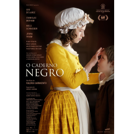

O Caderno Negro
Ficha Técnica
Título Original: O Caderno Negro
Intérpretes: Joana Ribeiro, Catarina Wallenstein, Stanisias Merhar,
Lou de Laâge e Victoria Guerra,
Realização: Valeria Sarmiento
Autoria: Valeria Sarmiento (adaptação), Camilo Castelo Branco (romance)
Ano: 2018
Duração: 113 minutos